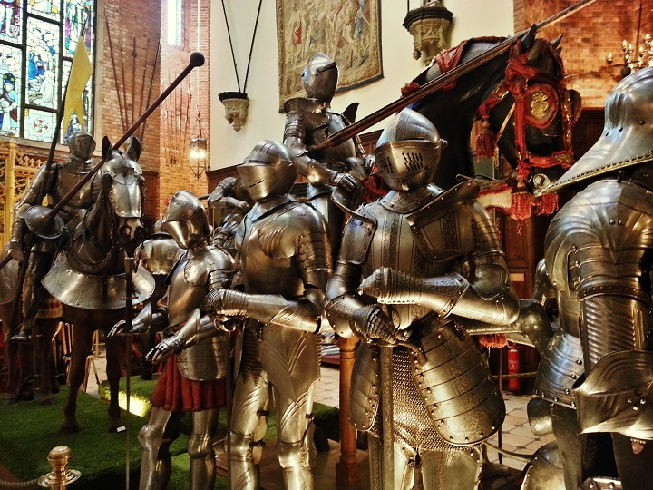
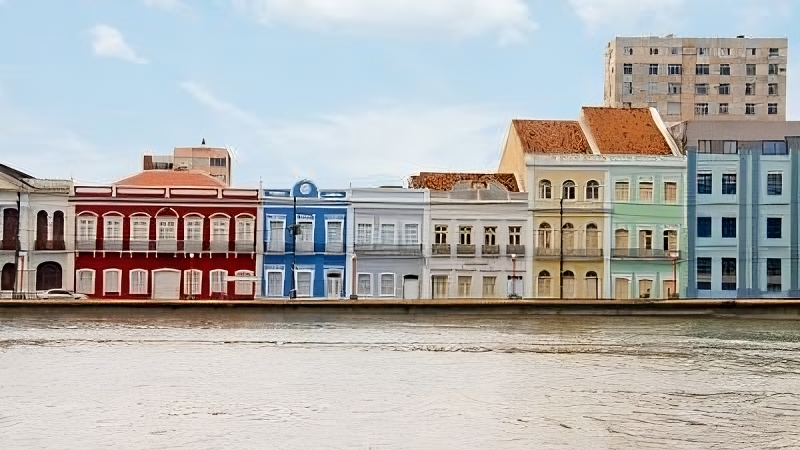

Pontos Turísticos
O Museu da Cidade do Recife é opção de lazer para quem vai passar o fim de semana na capital pernambucana

De forma lúdica e divertida, o Museu do Paço do Frevo leva os visitantes a conhecer a história desse ritmo tão presente na vida de Recife.
O ambiente une elementos regionais a uma arquitetura moderna, que transmite leveza e alegria.
O InstitutoRB Ricardo Brennand possui a maior coleção mundial do pintor holandês Frans Post, primeiro paisagista das Américas e primeiro pintor da paisagem brasileira.

O InstitutoRB Ricardo Brennand, Abriga ainda um dos maiores acervos de armas brancas do mundo,
com mais de 3 mil peças, entre elas 27 armaduras medievais completas
Aproveite sua viagem para Recife e curta as Piscinas naturais que contrastam com os prédios à beira-mar
